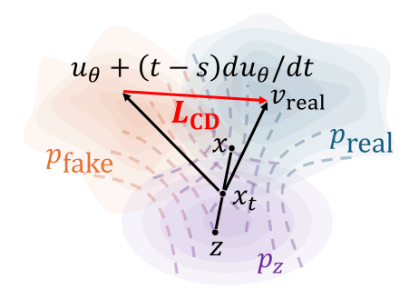
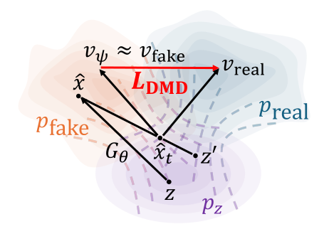
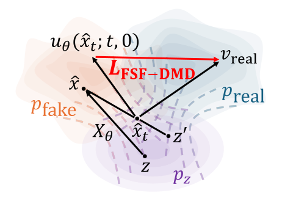
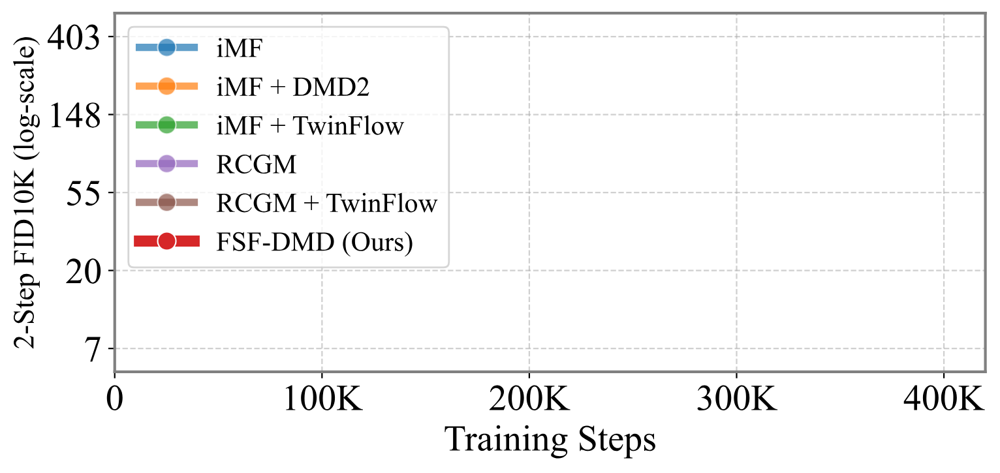
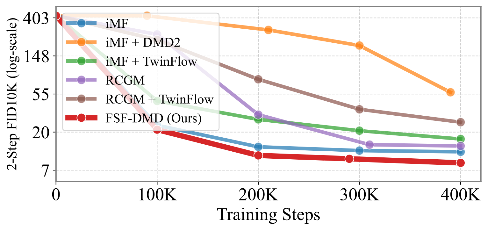

Conference on Neural Information Processing Systems (NeurIPS), 2026
Distribution Matching Distillation (DMD) provides an effective distribution-level correction for few-step generation, while relying on an auxiliary fake-score network to track the evolving generative distribution. Recent work combines DMD with a flow-map objective to exploit the benefits of both methods: mode-seeking and mode-covering behaviors. Since this fake-score network increases memory and update overhead, we study whether this explicit tracker can be avoided when the generator has a flow-map structure. In this work, we propose Fake-Score-network-Free DMD (FSF-DMD), a DMD-style correction for flow-map generators, replacing the auxiliary fake-score estimator with a generator-induced surrogate. We observe that this surrogate can be derived from the definition of the fake velocity under a certain perturbation assumption. Building on this insight, we derive a DMD-style objective without a fake-side network, extend it to backward simulation for flow maps, and to a self-teacher variant for training from scratch. In our ImageNet-1K \(256\!\times\!256\) experiments, FSF-DMD is competitive with the studied DMD baselines when initialized from pretrained networks and when trained from scratch.
Figure 4. 2-step FSF-DMD samples on ImageNet-1K \(256\!\times\!256\), flow-map-initialized.

(a) Consistency distillation
(b) DMD
(c) FSF-DMD (Ours)| Symbol | Description | Status |
|---|---|---|
| \(v^*_t\), \(X\) | Marginal velocity and flow map of the probability-flow ODE. | Ideal |
| \(v_\mathrm{fake}\), \(v^\mathrm{ODE}_\mathrm{fake}\) | Ideal fake velocities under independent and PF-ODE perturbations. | Ideal |
| \(s_\Phi\), \(v_\Phi\) | Teacher-score and teacher-velocity networks (subscripted by \(\Phi\)). | Frozen |
| \(s_\psi\), \(v_\psi\) | Fake-score and fake-velocity networks (subscripted by \(\psi\)). | Training |
| \(X_\theta\), \(u_\theta\) | Flow-map generator and pseudo-velocity network: \(G_\theta(z) = X_\theta(z; 1, 0)\). | Training |
| \(\bar u_\theta\) | Pseudo-velocity accumulated during backward simulation. | Output |
Table 2. Notation. Greek subscripts denote network parameters and other symbols denote ideal targets. A hat denotes a generated sample, and the subscript \(t\) denotes its noise level.
Flow Matching models learn a velocity field from an interpolant that transports particles between a prior distribution and the target data distribution. Let \(p_\mathrm{real}\) denote a data distribution. For a tractable prior distribution \(p_Z\), previous work defines the linear interpolation \(x_t = (1-t)x + tz\), where \(x\sim p_\mathrm{real}\), \(z\sim p_Z\), and \(t\in [0, 1]\).
The conditional velocity along this path is \(v_t(x_t|x) = (x_t - x) / t\), and the marginal velocity is given by \(v^*_t(x_t) = \mathbb E_{x|x_t}[v_t(x_t|x)]\). Generation follows the probability-flow ODE (PF-ODE) induced by \(v^*_t\), namely \(dx_t = v^*_t(x_t)\,dt\). A good approximation requires multiple sampling steps, which motivates a direct few-step generator.
Flow Maps. To construct a few-step generator from the underlying flow, a flow map (Boffi et al., 2025; Kim et al., 2024) defines a mapping between two points \(x_t\) and \(x_s\) on the same trajectory:
Following MeanFlow-style flow maps, we parameterize the flow-map network \(X_\theta\) with the pseudo-velocity network \(u_\theta\), given by \(X_\theta(x_t; t, s) = x_t + (s-t)u_\theta(x_t; t, s)\), and the corresponding consistency objective is:
where \(\operatorname{sg}[\cdot]\) is a stop-gradient operator and \(w_{t,s}\) is a scalar weight. In particular, \(u_\theta(x_t; t, s)\) represents the average velocity needed to move \(x_t\) to time \(s\), and \(u_\theta(x_t;t,t)\) recovers the instantaneous velocity \(v^*_t(x_t)\) in the \(s\to t\) limit.
Distribution Matching Distillation (DMD) (Yin et al., 2024b) matches the real and generative distributions through the difference between their perturbed scores to train a few-step generator \(G_\theta\). Let \(p_{\mathrm{fake}} = (G_\theta)_\# p_Z\) be the push-forward generative distribution. DMD minimizes the Kullback-Leibler (KL) divergence between the noised distributions:
for \(\hat x_t = (1-t)G_\theta(z) + tz'\) and \(z'\sim p_Z\). In this case, we assume the teacher-score network \(s_\Phi(x_t; t)\approx\nabla_x\log p_\mathrm{real}(x_t; t)\). As the fake score changes with \(G_\theta\), standard DMD introduces an auxiliary network \(s_\psi\) to estimate the score of the current generative distribution:
for \(\gamma_t = (1-t)t^{-1}\). The key point is that the fake score is not fixed: it changes as \(G_\theta\) updates. Therefore, DMD uses a separate fake-score tracker, represented here by \(s_\psi\) or \(v_\psi\), which introduces additional computational overhead.
| Method | Base flow map | GAN | Fake-side estimator | Rollout |
|---|---|---|---|---|
| DMD2 (Yin et al., 2024a) | - | ○ | Auxiliary network | Backward simulation |
| rCM (Zheng et al., 2026) | sCM (Lu and Song, 2025) | × | Auxiliary network | rCM rollout |
| SenseFlow (Ge et al., 2026) | ISG (Ge et al., 2026) | ○ | Auxiliary network | Backward simulation |
| TwinFlow (Cheng et al., 2026) | RCGM (Sun and Lin, 2026) | × | Twin velocity | One-step generation |
| FSF-DMD (Ours) | iMF (Geng et al., 2026a) | × | Surrogate velocity (Eq. 9) | Euler rollout (Eq. 16) |
Table 1. Design choices of DMD-style objectives combined with flow-map generators. Base flow map denotes the flow-map objective jointly trained with DMD, GAN denotes whether a GAN loss is adopted, Fake-side estimator denotes the fake-score or fake-velocity estimator, and Rollout denotes the few-step generation strategy used during training. FSF-DMD uses the generator-induced surrogate velocity and extends backward simulation to flow-map models based on the Euler method.
Our goal is estimating the fake velocity without introducing an additional network.
Motivating Observation. This becomes tractable when the generator has the flow-map structure in Eq. 2. Starting from the flow-map setting, the auxiliary fake velocity \(v_\psi\) would be trained by
where \(\hat x = G_\theta(z) = X_\theta(z; 1, 0)\). If the perturbation reuses the generator input, \(z'=z\), the fake velocity becomes a conditional expectation over the pseudo-velocity, \(\mathbb E_{z|\hat x_t}[u_\theta(z; 1, 0)]\). However, the conditional expectation is still not directly accessible since \(p(z|\hat x_t)\) is nontrivial in general.
Deriving the Surrogate. A further simplification appears under a PF-ODE-based noising process, which defines an inverse map \(\hat x_t = X(\hat x; 0,t)\). By injectivity and invertibility of the flow map, the posterior collapses to a point mass \(p(\hat x|\hat x_t) = \delta(X(\hat x; 0, t) - \hat x_t)\), yielding the corresponding fake velocity \(v_\mathrm{fake}^\mathrm{ODE}\) (see App. A.3):
Therefore, under the PF-ODE coupling, the pseudo-velocity \(u_\theta(\hat x_t; t,0)\) approximates the fake velocity \(v_\mathrm{fake}^\mathrm{ODE}(\hat x_t; t)\) without introducing a separate network or training loop.
We use it as a tractable surrogate for the fake velocity, replacing the explicit fake-velocity estimator:
We note that the fake velocity in Eq. 6 is determined by the noising process used to construct \(\hat x_t\). DMD uses the independent perturbation for both teacher and fake velocities: \(\hat x_t = (1-t)\hat x + tz'\) for \(\hat x \perp z'\). The corresponding flow fields are therefore consistently defined. However, assuming PF-ODE noising while retaining \(\hat x_t\) can induce inconsistency between the two fields, \(v_\mathrm{fake}\ne v^\mathrm{ODE}_\mathrm{fake}\), as observed in Table 13. Eq. 9 is therefore a heuristic surrogate rather than a pointwise estimate of the usual fake velocity, but remains effective in the studied settings (Sec. 4).
As one possible intuitive explanation, this could steer the per-point generative direction \(u_\theta(\hat x_t; t, 0)\) toward the teacher velocity \(v_\Phi\). This complements flow-map training without requiring the surrogate to be the exact fake velocity. We did not observe unusual optimization behavior attributable to this change in our settings (Fig. 3).
(Appendix B.2) Since the perturbation process is altered, the teacher- and fake-velocity fields can be inconsistent. To quantify this effect, we measure the cosine similarity and MSE between our surrogate and the conventionally trained fake velocity in Table 13. MSE (%) denotes the MSE normalized by the squared norm of the explicitly trained fake-velocity estimate, expressed as a percentage.
| Training steps | Cosine sim. | MSE | MSE (%) | FID |
|---|---|---|---|---|
| 0K - 0.2K | 0.93 | 0.38 | 14% | 5.57 |
| 0.2K - 1K | 0.51 | 12 | 79% | 4.49 |
| 1K - 2K | 0.41 | 18 | 90% | 4.12 |
| 2K - 3K | 0.41 | 18 | 90% | 3.89 |
| 3K - 4K | 0.42 | 18 | 88% | 3.85 |
Table 13. Discrepancy between the surrogate and estimated fake velocity over training steps.
Initially, the cosine similarity is higher and the MSE is lower than at later stages, and the surrogate is partly aligned with the usual fake velocity. After 200 steps, the similarity decreases, while FSF-DMD obtains FIDs comparable to those of DMD variants in Table 3.
Implementation. The implemented FSF-DMD objective inserts this surrogate into a stop-gradient objective, given by:
where \(w_t\) is a scalar. Since the surrogate is derived under the flow-map generator, we use consistency distillation (Sabour et al., 2026), \(\mathcal L_\mathrm{CD}\), to align the generator with the flow-map structure. The full objective combines this term with Eq. 11, weighted by a scalar \(\lambda\):
| Training steps | 1K | 2K | 4K | 6K |
|---|---|---|---|---|
| FID | 4.04 | 6.61 | 13.84 | 24.03 |
Table 12. FSF-DMD without consistency distillation \(\mathcal L_\mathrm{CD}\) in the flow-map-initialized setting.
FSF-DMD begins to diverge after 1K training steps when \(\mathcal L_\mathrm{CD}\) is omitted. One possible explanation is that the pseudo-velocity surrogate depends on flow-map properties, including point-mass collapse, injectivity, and invertibility. Without this anchor, the objective pushes \(u_\theta(\hat x_t; t, 0)\) toward \(v_\Phi(\hat x_t; t)\), and one-step generation may collapse toward the data mean due to the posterior-mean property (Karras et al., 2022).
In the few-step generation setting, except for the first step, the generator input is derived from the previously generated sample. This induces a training-inference mismatch when we directly use perturbed data samples during training, and may affect generation performance. To minimize this mismatch, DMD2 introduces backward simulation. However, unlike DMD2, the flow-map generator has a different generation pipeline:
for \(\hat x = \hat x_0\), \(\hat x_1 = z\), and \(0\le i < N\). We found that backward simulation has room for improvement in our setting, since it does not fully reflect the flow-map generation process. We therefore make it consistent with the flow-map generator. We use \(N\) for inference-time generation steps and \(M\) for backward-simulation steps. Following Huang et al. (2026), applying stop-gradient to intermediate samples gives:
Incorporating Eq. 16 into the single-step objective in Eq. 11 gives our final few-step objective:
This objective preserves the flow-map generation process and coincides with the initial version in Eq. 11 when \(M=1\). We observe that it gives better performance in our setting, as shown in Table 5.
We can even extend FSF-DMD to the training-from-scratch setting without a teacher network. Since the MeanFlow-style parameterization gives \(u_\theta(x_t; t, t)\approx v^*_t(x_t)\), we can substitute the teacher network \(v_\Phi(x_t; t)\) with the network approximation itself:
For this setting, we replace consistency distillation with consistency training in Eq. 3. This objective provides a DMD-style correction for generated samples even in the training-from-scratch stage. It requires neither a teacher network nor an additional fake-velocity objective in generator training.
| Method | FID | Peak step | sec/step | VRAM (GB) |
|---|---|---|---|---|
| Consistency distillation (Sabour et al., 2026) | 6.06 | 36K | 0.23 | 26 |
| DMD2 (Yin et al., 2024a) | 4.18 | 15K | 1.46 | 60 |
| DMD2 + IDA-style update (Ge et al., 2026) | 4.20 | 12K | 1.46 | 60 |
| DMD2 + \(\mathcal L_\mathrm{CD}\) (Zheng et al., 2026) | 4.67 | 54K | 1.63 | 76 |
| DMD2 + \(\mathcal L_\mathrm{CD}\) + Random masking \(s\gets t\) | 3.85 | 63K | 1.68 | 76 |
| FSF-DMD (Ours, \(M=2\)) | 3.85 | 4K | 0.38 | 49 |
| FSF-DMD (Ours, \(M=1\)) | 3.96 | 3K | 0.31 | 49 |
Table 3. Comparison on ImageNet-1K in the flow-map-initialized setting. Peak step denotes the training step that achieves the reported FID, sec/step denotes the wall-clock time per training step, and VRAM denotes the VRAM requirement. The teacher achieves FID 8.54 with 8 sampling steps.
Table 3 compares FSF-DMD with consistency distillation and DiT-adapted DMD variants in the flow-map-initialized setting. Under this controlled comparison, FSF-DMD obtains an FID equal to or lower than those of the listed variants without an explicit fake-score network or an adversarial branch.
These results provide proof-of-concept evidence that (i) the implementation-level surrogate is effective in practice, and (ii) FSF-DMD is competitive with explicit-network variants in this setting. Additional metrics in Table 14 show that FSF-DMD also improves IS and recall in the flow-map-initialized setting.
Practically, FSF-DMD reduces the VRAM requirement and wall-clock time compared to the DMD2 variants on NVIDIA B200 GPUs, under the same local setup. The gap between DMD2 and FSF-DMD is mainly due to the additional fake-velocity network and TTUR, which FSF-DMD does not require.
| Method | sec/step | Peak step | FID (↓) | IS (↑) | Precision (↑) | Recall (↑) |
|---|---|---|---|---|---|---|
| Flow-map-initialized setting | ||||||
| Consistency distillation | 0.23 | 36K | 6.06 | 188.90 | 0.65 | 0.47 |
| DMD2 | 1.46 | 15K | 4.18 | 237.12 | 0.60 | 0.50 |
| DMD2 + IDA-style update | 1.46 | 12K | 4.20 | 244.09 | 0.60 | 0.49 |
| DMD2 + \(\mathcal L_\mathrm{CD}\) | 1.63 | 54K | 4.67 | 221.87 | 0.61 | 0.49 |
| FSF-DMD (Ours, \(M=2\)) | 0.38 | 4K | 3.85 | 262.50 | 0.59 | 0.53 |
| FSF-DMD (Ours, \(M=1\)) | 0.31 | 3K | 3.96 | 207.83 | 0.62 | 0.51 |
| Flow-matching-initialized setting | ||||||
| Consistency distillation | 0.11 | 19K | 5.53 | 280.90 | 0.48 | 0.53 |
| DMD2 (TTUR=1:5) | 0.82 | 3K | 5.53 | 287.33 | 0.47 | 0.54 |
| DMD2 + \(\mathcal L_\mathrm{CD}\) (TTUR=1:5) | 0.90 | 33K | 4.90 | 262.03 | 0.54 | 0.53 |
| FSF-DMD (Ours) | 0.17 | 8K | 4.70 | 246.01 | 0.55 | 0.54 |
Table 14. Additional metrics for ImageNet-1K \(256\!\times\!256\) comparisons. We report FID50K, Inception Score (IS), and precision/recall at the best-FID checkpoint for each listed method.
Unconditional Generation. We evaluate unconditional generation using CelebA-HQ at \(256\!\times\!256\) scale with SD-VAE latents (Rombach et al., 2022) and DiT-B/2, following Frans et al. (2025). In this setting, FSF-DMD shows comparable results to the listed methods, remaining effective for unconditional generation.
| Method | \(N\) | FID |
|---|---|---|
| Flow Matching (Lipman et al., 2023) | 128 | 7.3 |
| Shortcut Models (Frans et al., 2025) | 128 | 6.9 |
| 4 | 13.8 | |
| MeanFlow (Geng et al., 2026b) | 2 | 6.39 |
| 1 | 8.85 | |
| DMD2 (\(M=2\)) | 2 | 6.24 |
| DMD2 (\(M=1\)) | 1 | 8.62 |
| FSF-DMD (Ours, \(M=2\)) | 2 | 6.20 |
| FSF-DMD (Ours, \(M=1\)) | 1 | 8.04 |
Table 4. Comparison on CelebA-HQ.
| Distillation variant | FID |
|---|---|
| Consistency distillation (Sabour et al., 2026) | 6.06 |
| + FSF-DMD (Ours, Eq. 11) | 5.70 |
| + Backward simulation (DMD2, \(M=2\)) | 5.81 |
| + Backward simulation (Ours, Eq. 18) | 5.34 |
| + Hyperparameter tuning | 4.45 |
| + Random masking \(s\gets t\) | 3.85 |
| FSF-DMD + Single-step simulation (\(M=1\)) | 3.96 |
| DMD2 + Single-step simulation (\(M=1\)) | 4.78 |
| Consistency distillation + Random masking | 4.98 |
Table 5. Ablation study on ImageNet-1K.
As shown in Table 5, the improvement appears when FSF-DMD is combined with backward simulation (\(M=2\)). Our flow-map version in Eq. 18 gives a better result than the DMD2-style simulation. Since it preserves the generation pipeline of the flow-map model, we attribute this gain to better alignment with the generation process. We also evaluate consistency distillation with the same random masking. It reaches 4.98 FID, leaving a gap that supports the role of the DMD-style correction of FSF-DMD.
Compared to the single-step simulation result for DMD2 in Table 5, FSF-DMD with single-step simulation (\(M=1\)) shows a relatively small degradation. This is consistent with the semigroup property of flow maps, \(X(x_t; t, s) = X(X(x_t; t, r); r, s)\), which allows backward simulation to be approximated by single-step generation.
| \(\kappa\) | 1.0 | 3.0 | 5.0 | 7.0 | 10.0 |
|---|---|---|---|---|---|
| FID | 4.06 | 3.94 | 3.89 | 3.87 | 3.87 |
Table 9. Results of FSF-DMD (\(M=2\)) across \(\kappa\) when \(\lambda\times w_t=0.05\times 1.0\).
| \(w_t\) | 0.01 | 0.05 | 0.1 | 0.5 |
|---|---|---|---|---|
| 1 | 3.97 | 3.87 | 3.98 | 3.99 |
| \(1/|\bar u_\theta - v_\Phi|\) | 4.03 | 3.85 | 3.85 | 3.94 |
Table 10. FIDs across \(\lambda\) and \(w_t\). Numeric entries in the header row are \(\lambda\) (\(\kappa=10\)).
For \(\kappa\) in the flow-map-initialized setting, the ablation in Table 9 shows that timestep shifting improves distribution matching compared to the unshifted setting (\(\kappa=1\)). We then fix \(\kappa=10\) and study \(\lambda\) with \(w_t\) in Table 10. Adaptive scaling gives better FID for \(\lambda \ge 0.05\). Thus, we use \(\lambda \times w_t = 0.1 / |\bar u_\theta(z; 1, 0) - v_\Phi(\hat x_t; t)|\) in the following experiments. We also evaluate \(\lambda \times w_t=0.5 \times 1.0\) while clipping \(\Delta_{u, \Phi}\) to \([-1, 1]\), following Cheng et al. (2026). This gives an FID of 3.98, so we keep the adaptive scaling.
| Method | FID |
|---|---|
| Teacher-velocity network | 12.44 |
| + 3-channel CFG | 3.79 |
| Consistency distillation | 5.53 |
| DMD2 (TTUR=1:5) | 5.53 |
| DMD2 + \(\mathcal L_\mathrm{CD}\) (TTUR=1:5) | 4.90 |
| FSF-DMD (Ours) | 4.70 |
Table 6. Comparison on ImageNet-1K with flow-matching initialization. The teacher is evaluated with 250-step Euler sampling.
We then relax the initialization from a pretrained flow-map model to a more common flow-matching model (Yao et al., 2025). The results suggest that FSF-DMD can be trained under the relaxed initialization. It improves over the consistency distillation baseline and the listed comparisons in this evaluation.
Compared to Table 3, initialization from a flow-map model gives better FSF-DMD results. This may be due to several factors. First, the generator is already capable of few-step generation, and the correction signal may be more reliable at the early training stage. Second, the improved MeanFlow (iMF) model uses more parameters and computation, and part of the gap may simply reflect scaling.


| Method | FID (↓) | IS (↑) |
|---|---|---|
| iMF baseline (Geng et al., 2026a) | 9.10 | 148.71 |
| iMF + DMD2 (TTUR=1:5) | 13.38 | 138.80 |
| iMF + TwinFlow (Cheng et al., 2026) | 12.17 | 144.26 |
| RCGM (Sun and Lin, 2026) | 11.53 | 164.55 |
| RCGM + TwinFlow | 22.58 | 106.04 |
| FSF-DMD (Ours) | 6.35 | 194.91 |
Table 7. Training from scratch for 400K steps on ImageNet-1K (FID50K and IS).
We evaluate FSF-DMD from random initialization with Eq. 19. As shown in Table 7, FSF-DMD is not restricted to distilling pretrained models; it can be directly applied to train flow-map models entirely from scratch. Fig. 3 suggests that, compared to the other methods, training is faster and reaches a better result under the same training budget. One possible explanation is that FSF-DMD does not require the generator to learn a separate fake-velocity branch, allowing it to remain focused on generation.
@inproceedings{kim2026distribution,
title={Distribution Matching Distillation without Fake Score Network},
author={Youngjoong Kim and Deokyeong Lee and Jaesik Park},
booktitle={The Fortieth Annual Conference on Neural Information Processing Systems},
year={2026}
}